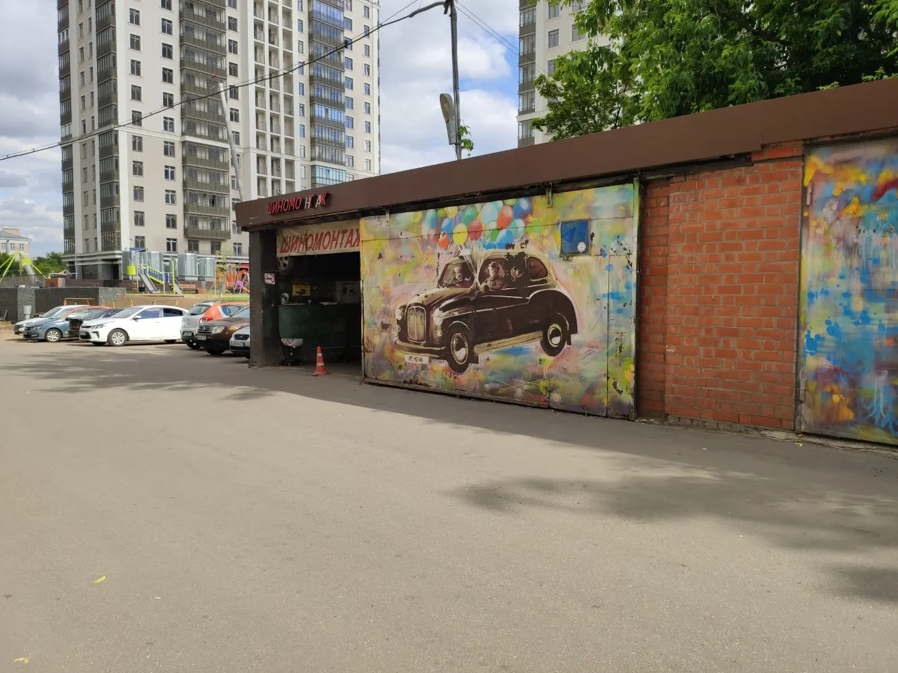
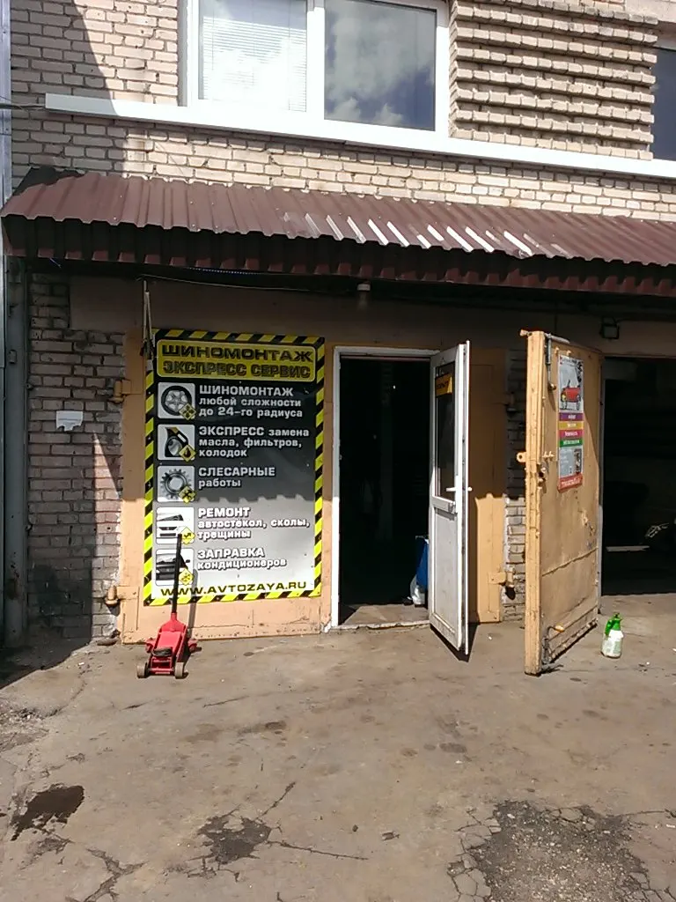
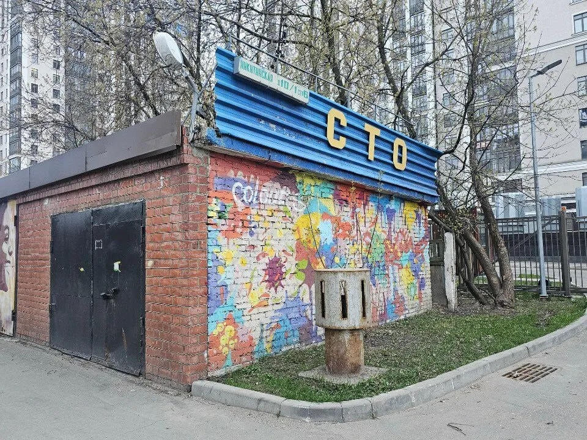
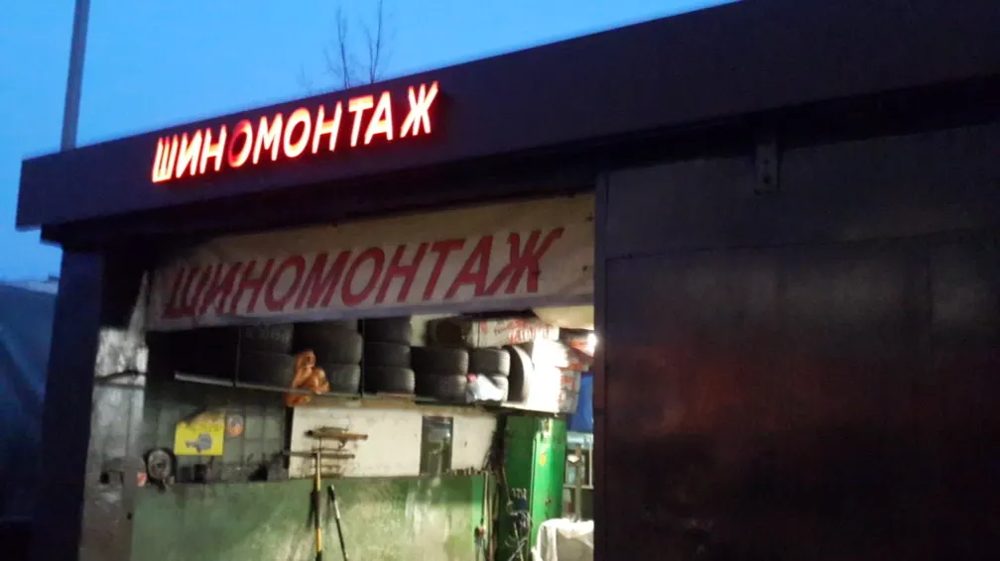

Шиномонтаж · Никитинская, 10/1 с6
Шиномонтажная мастерская на Никитинской – прокол залатаем за 20 минут
Никитинская улица, 10/1, стр. 6. Переобувка, балансировка, ремонт проколов, правка дисков. Ежедневно с 09:00 до 19:00.
- Ежедневно 09:00–19:00
- 420 оценок, рейтинг 5,0
- Ремонт проколов и правка дисков

Услуги и цены
Цен на карточке нет – стоимость под ваш радиус назовём при записи.
Шиномонтаж
- Сезонная переобувка комплектауточнить
- Переброска колёс на дискахуточнить
- Балансировкауточнить
Ремонт
- Ремонт прокола (грибок, жгут)уточнить
- Правка дискауточнить
- Проверка и подкачка давленияуточнить
В отзывах цены называют «гуманными» и «адекватными». Точную сумму скажем по вашей машине.
Как проходит
- 01
Записываетесь на время
Машиноместо у нас одно – с записью не придётся звонить и узнавать про очередь.
- 02
Заезжаете на Никитинскую, 10/1
Синяя вывеска «СТО» и ворота с граффити.
- 03
Находим прокол, чиним, проверяем
Диагностика, ремонт, давление во всех колёсах – и подробно объясним, что было.
- 04
Оплачиваете и едете
Без навязанных услуг: только то, о чём договорились.



За чем к нам едут
Быстро
«Минут за 15-20 залатали и выправили диск» – из отзыва на Картах.
Опытные мастера
Клиенты ездят к нам годами и называют мастеров по именам.
Берёмся, когда другие не берутся
Загнутый диск в дороге, прокол в снегопад и мороз – поможем.
Отзывы с Яндекс.Карт
«Проткнула колесо по дороге в Москву. К счастью, рядом с моей парковкой оказалось это СТО. Минут за 15-20 залатали и выправили диск. Огромное спасибо, домой добралась живая!!!»
Ира · 27 июня 2026
«Замечательное обслуживание, быстро продиагностировали, поставили грибок, подкачали все колеса, подробно всё объяснили, душевно пообщались про отпуск, с колесом все отлично 👌спасибо большое!!!»
Екатерина Улискова · 13 июня 2026
«Наступил ноябрь, пора менять шины! Заехал в шиномонтаж и вуаля! Очереди нет , хорошие люди встретили быстро поменяли лето на зиму и ценник гуманный. Спасибо , остались ещё порядочные люди которые все делают хорошо и на совесть!»
О. В. · 14 ноября 2025
Отзывы с карточки на Яндекс.Картах, без правок.
Частые вопросы
Как вас найти?
Никитинская улица, 10/1, стр. 6. Синяя вывеска «СТО», ворота с граффити.
Нужна ли запись?
Машиноместо одно, поэтому лучше записаться заранее – так не придётся ждать.
Можно приехать с проколом без записи?
Да, срочный ремонт прокола берём в порядке очереди.
Правите диски?
Да, правим диски на месте.
Запишитесь, чтобы не ждать
- Адрес
- Никитинская улица, 10/1, стр. 6, Москва
- Часы
- Ежедневно 09:00–19:00
- Телефон
- +7 (916) 263-12-09